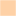

<!doctype html>
<html lang="en">
    <head>
        <meta charset="utf-8">
        <meta http-equiv="X-UA-Compatible" content="IE=edge">
        <meta name="viewport" content="initial-scale=1,user-scalable=no,maximum-scale=1,width=device-width">
        <meta name="mobile-web-app-capable" content="yes">
        <meta name="apple-mobile-web-app-capable" content="yes">
        <link rel="stylesheet" href="css/leaflet.css">
        <link rel="stylesheet" href="css/qgis2web.css"><link rel="stylesheet" href="css/fontawesome-all.min.css">
        <link rel="stylesheet" href="css/leaflet-search.css">
        <style>
        #map {
            width: 1014px;
            height: 540px;
        }
        </style>
        <title>DGF</title>
    </head>
    <body>
        <div id="map">
        </div>
        <script src="js/qgis2web_expressions.js"></script>
        <script src="js/leaflet.js"></script>
        <script src="js/leaflet.rotatedMarker.js"></script>
        <script src="js/leaflet.pattern.js"></script>
        <script src="js/leaflet-hash.js"></script>
        <script src="js/Autolinker.min.js"></script>
        <script src="js/rbush.min.js"></script>
        <script src="js/labelgun.min.js"></script>
        <script src="js/labels.js"></script>
        <script src="js/leaflet-search.js"></script>
        <script src="data/DGF_epcimet_0.js"></script>
        <script src="data/DDFdeptmet_1.js"></script>
        <script>
        var map = L.map('map', {
            zoomControl:true, maxZoom:28, minZoom:1
        }).fitBounds([[41.031693926547696,-7.635485530384546],[50.94684961395256,18.918392353257023]]);
        var hash = new L.Hash(map);
        map.attributionControl.setPrefix('<a href="https://github.com/tomchadwin/qgis2web" target="_blank">qgis2web</a> &middot; <a href="https://leafletjs.com" title="A JS library for interactive maps">Leaflet</a> &middot; <a href="https://qgis.org">QGIS</a>');
        var autolinker = new Autolinker({truncate: {length: 30, location: 'smart'}});
        var bounds_group = new L.featureGroup([]);
        function setBounds() {
        }
        function pop_DGF_epcimet_0(feature, layer) {
            var popupContent = '<table>\
                    <tr>\
                        <th scope="row">Nom</th>\
                        <td>' + (feature.properties['Nom'] !== null ? autolinker.link(feature.properties['Nom'].toLocaleString()) : '') + '</td>\
                    </tr>\
                    <tr>\
                        <td colspan="2">' + (feature.properties['Evolution '] !== null ? autolinker.link(feature.properties['Evolution '].toLocaleString()) : '') + '</td>\
                    </tr>\
                    <tr>\
                        <th scope="row">Montant DG</th>\
                        <td>' + (feature.properties['Montant DG'] !== null ? autolinker.link(feature.properties['Montant DG'].toLocaleString()) : '') + '</td>\
                    </tr>\
                    <tr>\
                        <th scope="row">Montant DG_1</th>\
                        <td>' + (feature.properties['Montant DG_1'] !== null ? autolinker.link(feature.properties['Montant DG_1'].toLocaleString()) : '') + '</td>\
                    </tr>\
                    <tr>\
                        <th scope="row">Part de la</th>\
                        <td>' + (feature.properties['Part de la'] !== null ? autolinker.link(feature.properties['Part de la'].toLocaleString()) : '') + '</td>\
                    </tr>\
                    <tr>\
                        <th scope="row">Variation </th>\
                        <td>' + (feature.properties['Variation '] !== null ? autolinker.link(feature.properties['Variation '].toLocaleString()) : '') + '</td>\
                    </tr>\
                    <tr>\
                        <th scope="row">Part de la_1</th>\
                        <td>' + (feature.properties['Part de la_1'] !== null ? autolinker.link(feature.properties['Part de la_1'].toLocaleString()) : '') + '</td>\
                    </tr>\
                    <tr>\
                        <th scope="row">EvoDGF</th>\
                        <td>' + (feature.properties['EvoDGF'] !== null ? autolinker.link(feature.properties['EvoDGF'].toLocaleString()) : '') + '</td>\
                    </tr>\
                </table>';
            layer.bindPopup(popupContent, {maxHeight: 400});
        }

        function style_DGF_epcimet_0_0(feature) {
            if (feature.properties['EvoDGF'] >= -50.000000 && feature.properties['EvoDGF'] <= -2.000000 ) {
                return {
                pane: 'pane_DGF_epcimet_0',
                opacity: 1,
                color: 'rgba(255,255,255,1.0)',
                dashArray: '',
                lineCap: 'butt',
                lineJoin: 'miter',
                weight: 1, 
                fill: true,
                fillOpacity: 1,
                fillColor: 'rgba(254,209,166,1.0)',
                interactive: true,
            }
            }
            if (feature.properties['EvoDGF'] >= -2.000000 && feature.properties['EvoDGF'] <= 2.000000 ) {
                return {
                pane: 'pane_DGF_epcimet_0',
                opacity: 1,
                color: 'rgba(255,255,255,1.0)',
                dashArray: '',
                lineCap: 'butt',
                lineJoin: 'miter',
                weight: 1, 
                fill: true,
                fillOpacity: 1,
                fillColor: 'rgba(254,163,76,1.0)',
                interactive: true,
            }
            }
            if (feature.properties['EvoDGF'] >= 2.000000 && feature.properties['EvoDGF'] <= 800.000000 ) {
                return {
                pane: 'pane_DGF_epcimet_0',
                opacity: 1,
                color: 'rgba(255,255,255,1.0)',
                dashArray: '',
                lineCap: 'butt',
                lineJoin: 'miter',
                weight: 1, 
                fill: true,
                fillOpacity: 1,
                fillColor: 'rgba(254,123,0,1.0)',
                interactive: true,
            }
            }
        }
        map.createPane('pane_DGF_epcimet_0');
        map.getPane('pane_DGF_epcimet_0').style.zIndex = 400;
        map.getPane('pane_DGF_epcimet_0').style['mix-blend-mode'] = 'normal';
        var layer_DGF_epcimet_0 = new L.geoJson(json_DGF_epcimet_0, {
            attribution: '',
            interactive: true,
            dataVar: 'json_DGF_epcimet_0',
            layerName: 'layer_DGF_epcimet_0',
            pane: 'pane_DGF_epcimet_0',
            onEachFeature: pop_DGF_epcimet_0,
            style: style_DGF_epcimet_0_0,
        });
        bounds_group.addLayer(layer_DGF_epcimet_0);
        map.addLayer(layer_DGF_epcimet_0);
        function pop_DDFdeptmet_1(feature, layer) {
            var popupContent = '<table>\
                    <tr>\
                        <th scope="row">Nom</th>\
                        <td>' + (feature.properties['Nom'] !== null ? autolinker.link(feature.properties['Nom'].toLocaleString()) : '') + '</td>\
                    </tr>\
                    <tr>\
                        <th scope="row">Evo DGF</th>\
                        <td>' + (feature.properties['Evo DGF'] !== null ? autolinker.link(feature.properties['Evo DGF'].toLocaleString()) : '') + '</td>\
                    </tr>\
                    <tr>\
                        <th scope="row">DGF</th>\
                        <td>' + (feature.properties['DGF'] !== null ? autolinker.link(feature.properties['DGF'].toLocaleString()) : '') + '</td>\
                    </tr>\
                    <tr>\
                        <th scope="row">DGF/hab</th>\
                        <td>' + (feature.properties['DGF/hab'] !== null ? autolinker.link(feature.properties['DGF/hab'].toLocaleString()) : '') + '</td>\
                    </tr>\
                    <tr>\
                        <th scope="row">Part DGF/R</th>\
                        <td>' + (feature.properties['Part DGF/R'] !== null ? autolinker.link(feature.properties['Part DGF/R'].toLocaleString()) : '') + '</td>\
                    </tr>\
                    <tr>\
                        <th scope="row">Evo DGF/RF</th>\
                        <td>' + (feature.properties['Evo DGF/RF'] !== null ? autolinker.link(feature.properties['Evo DGF/RF'].toLocaleString()) : '') + '</td>\
                    </tr>\
                    <tr>\
                        <th scope="row">Ppéréquati</th>\
                        <td>' + (feature.properties['Ppéréquati'] !== null ? autolinker.link(feature.properties['Ppéréquati'].toLocaleString()) : '') + '</td>\
                    </tr>\
                </table>';
            layer.bindPopup(popupContent, {maxHeight: 400});
        }

        function style_DDFdeptmet_1_0(feature) {
            if (feature.properties['q2wHide_vDGF'] >= -39.870000 && feature.properties['q2wHide_vDGF'] <= -0.500000 ) {
                return {
                pane: 'pane_DDFdeptmet_1',
                opacity: 1,
                color: 'rgba(255,255,255,1.0)',
                dashArray: '',
                lineCap: 'butt',
                lineJoin: 'miter',
                weight: 1, 
                fill: true,
                fillOpacity: 1,
                fillColor: 'rgba(254,209,166,1.0)',
                interactive: true,
            }
            }
            if (feature.properties['q2wHide_vDGF'] >= -0.500000 && feature.properties['q2wHide_vDGF'] <= 0.500000 ) {
                return {
                pane: 'pane_DDFdeptmet_1',
                opacity: 1,
                color: 'rgba(255,255,255,1.0)',
                dashArray: '',
                lineCap: 'butt',
                lineJoin: 'miter',
                weight: 1, 
                fill: true,
                fillOpacity: 1,
                fillColor: 'rgba(254,163,76,1.0)',
                interactive: true,
            }
            }
            if (feature.properties['q2wHide_vDGF'] >= 0.500000 && feature.properties['q2wHide_vDGF'] <= 100.000000 ) {
                return {
                pane: 'pane_DDFdeptmet_1',
                opacity: 1,
                color: 'rgba(255,255,255,1.0)',
                dashArray: '',
                lineCap: 'butt',
                lineJoin: 'miter',
                weight: 1, 
                fill: true,
                fillOpacity: 1,
                fillColor: 'rgba(254,123,0,1.0)',
                interactive: true,
            }
            }
        }
        map.createPane('pane_DDFdeptmet_1');
        map.getPane('pane_DDFdeptmet_1').style.zIndex = 401;
        map.getPane('pane_DDFdeptmet_1').style['mix-blend-mode'] = 'normal';
        var layer_DDFdeptmet_1 = new L.geoJson(json_DDFdeptmet_1, {
            attribution: '',
            interactive: true,
            dataVar: 'json_DDFdeptmet_1',
            layerName: 'layer_DDFdeptmet_1',
            pane: 'pane_DDFdeptmet_1',
            onEachFeature: pop_DDFdeptmet_1,
            style: style_DDFdeptmet_1_0,
        });
        bounds_group.addLayer(layer_DDFdeptmet_1);
        map.addLayer(layer_DDFdeptmet_1);
            var title = new L.Control();
            title.onAdd = function (map) {
                this._div = L.DomUtil.create('div', 'info');
                this.update();
                return this._div;
            };
            title.update = function () {
                this._div.innerHTML = '<h2>DGF</h2>';
            };
            title.addTo(map);
        var baseMaps = {};
        L.control.layers(baseMaps,{'DDF-dept-met<br /><table><tr><td style="text-align: center;"></td><td>Inférieure à -0,5%</td></tr><tr><td style="text-align: center;"></td><td>-0,5% à +0,5%</td></tr><tr><td style="text-align: center;"></td><td>Supérieure à +0,5%</td></tr></table>': layer_DDFdeptmet_1,'DGF_epci-met<br /><table><tr><td style="text-align: center;"></td><td>Inférieure à -2%</td></tr><tr><td style="text-align: center;"></td><td>-2% à +2%</td></tr><tr><td style="text-align: center;"></td><td>Supérieure à +2%</td></tr></table>': layer_DGF_epcimet_0,}).addTo(map);
        setBounds();
        map.addControl(new L.Control.Search({
            layer: layer_DGF_epcimet_0,
            initial: false,
            hideMarkerOnCollapse: true,
            propertyName: 'Nom'}));
        document.getElementsByClassName('search-button')[0].className +=
         ' fa fa-binoculars';
        </script>
    </body>
</html>
